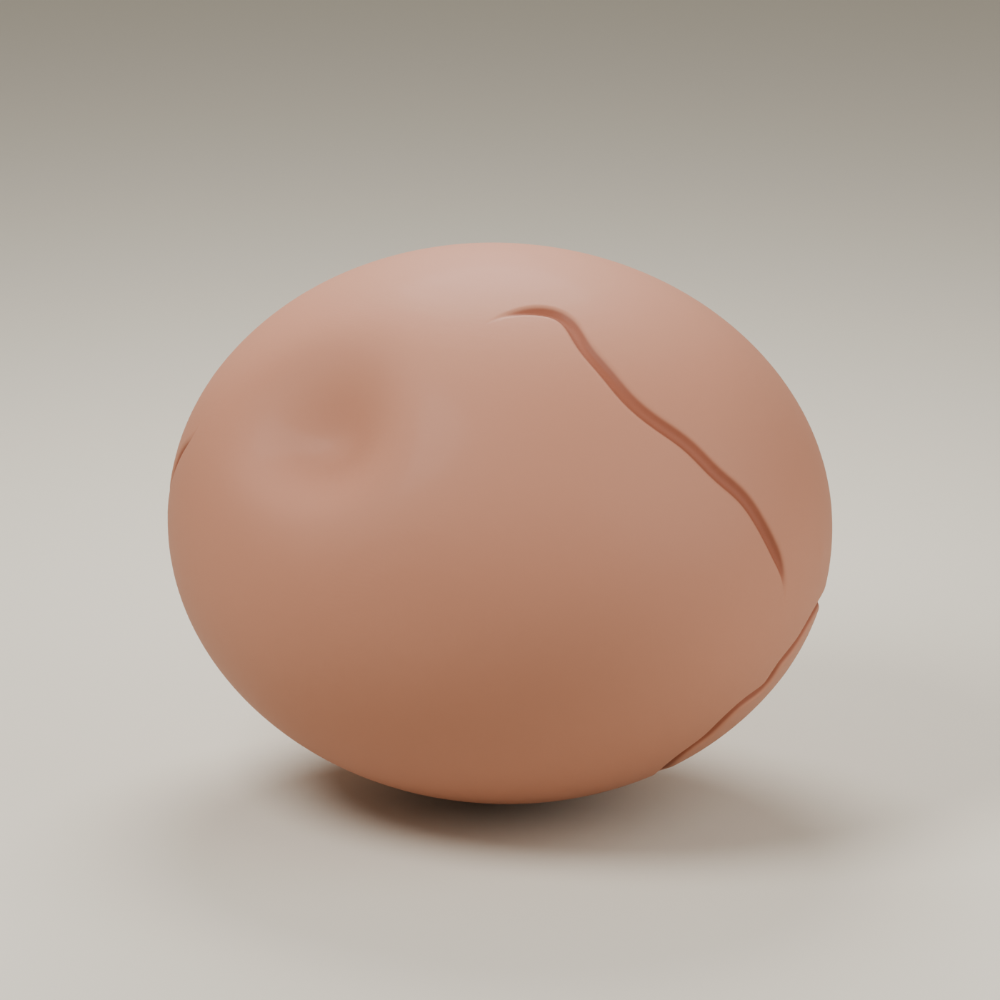
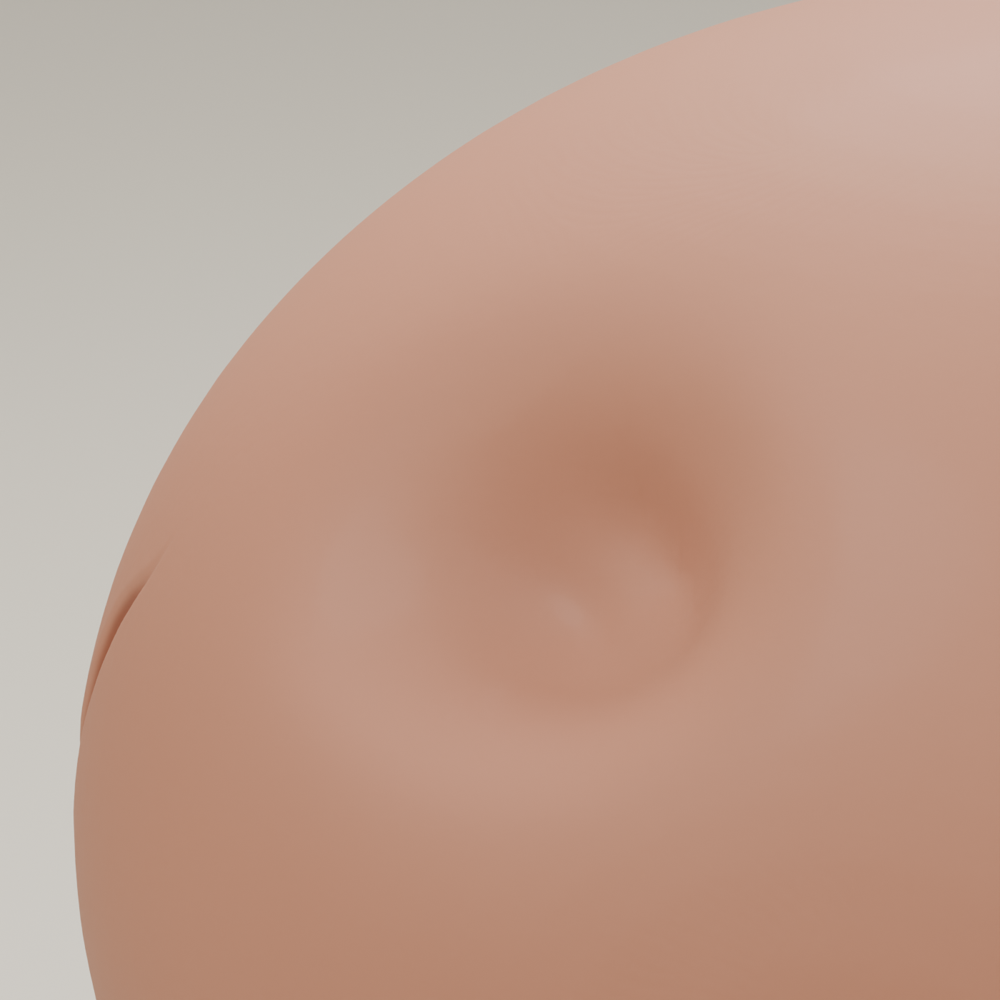
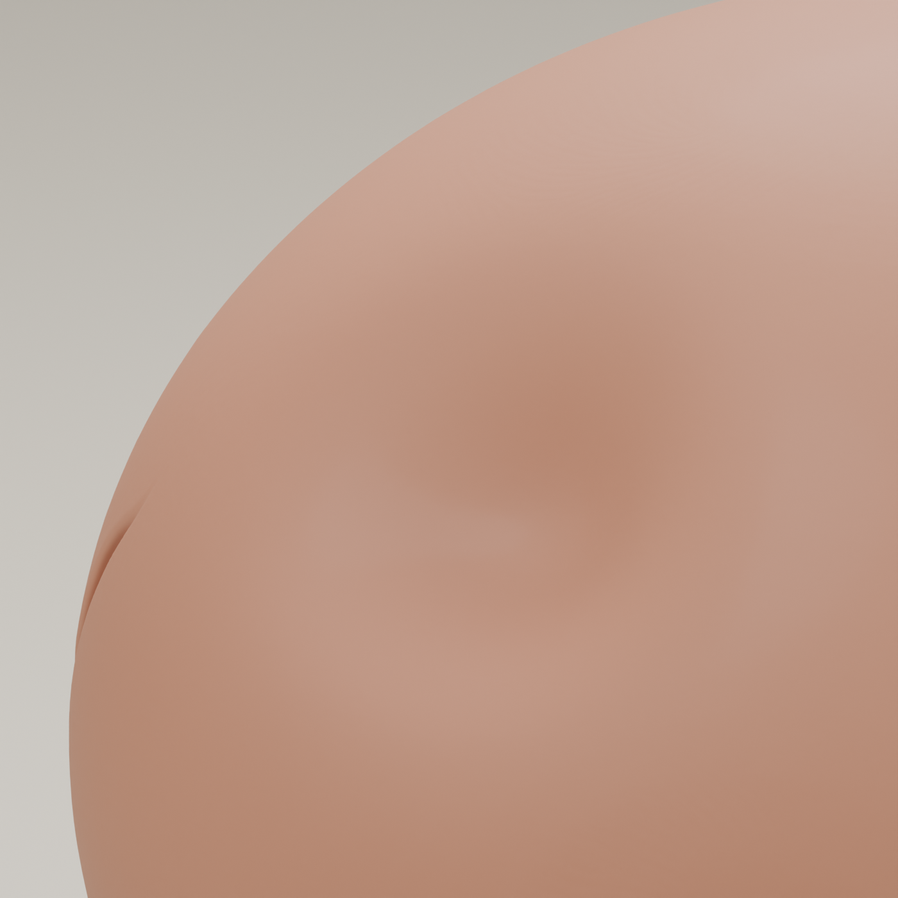
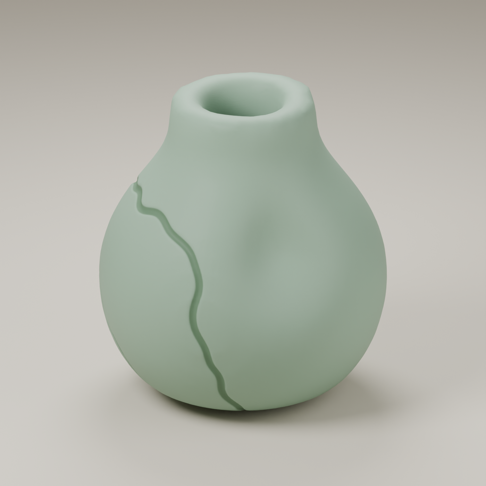
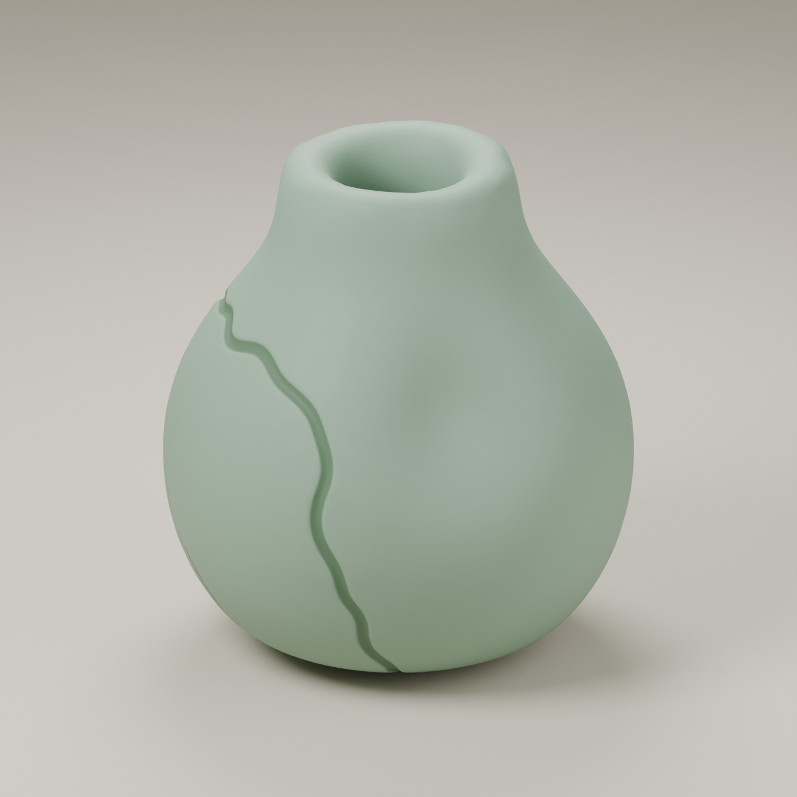
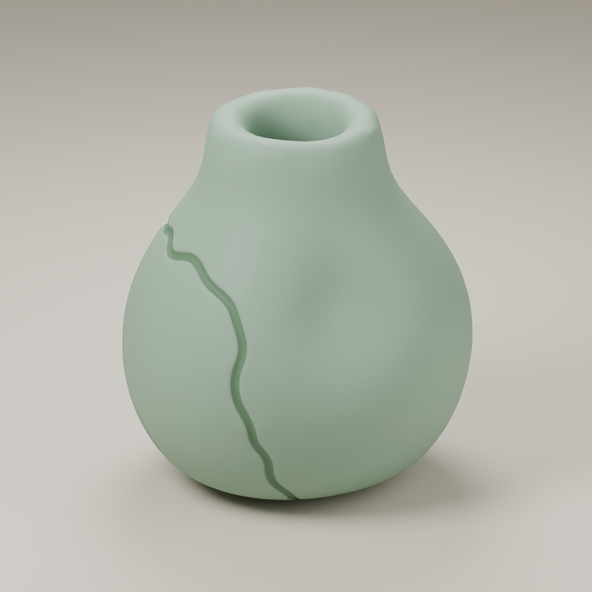
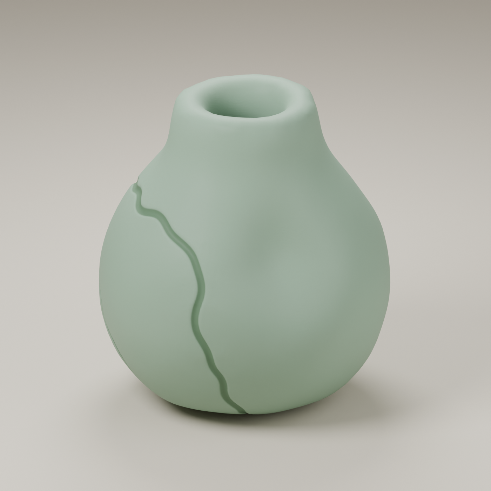

The detail to keep
That lovely, wandering crack.
It gives this little pebble its character. The small dent to its left catches the light awkwardly. We lowered Hold Shape to let that patch relax. The crack still belongs to the piece.
Artistic Guides / 01 · A gentle shape fix
You love that crack. The little pinched patch beside it? Less so. Give the clay a gentler shape without starting your favorite detail over.
Try it on your model ↓ Or download a practice vase ↓
BEFOREAFTERThe detail to keep
It gives this little pebble its character. The small dent to its left catches the light awkwardly. We lowered Hold Shape to let that patch relax. The crack still belongs to the piece.


Try it on your model
Save a copy first. These controls leave your original parts editable, so you can adjust them again whenever you like.
Select your clay model. If it has one source part, you can reach Hold Shape directly:
Several parts? Choose Edit Parts, select the affected piece, then find Hold Shape in Join Controls.
Lower Hold Shape a small amount. Pause and look. Keep going only while the shape feels better.
This pebble already has Source rounding 1 and Knead / soften 45, with Hand pressure 0. Your model may need only a small nudge. If Hold Shape is already 0, try a little more Knead / soften instead.
Let the preview finish, then look from the same angle. Is the pinch softer? Does the crack still feel right? Stop there. Undo a step if you preferred the previous shape.
If the preview still looks rough, use Full Quality Now before deciding.
Other gentle fixes
Try a little more Knead / soften. It rounds the clay without choosing a new crack pattern.
Try less Hand pressure. Lowering Hold Shape can allow more pressure through, so reduce pressure itself when it causes the dent.
Under More shape controls, lower Hand-shaped amount. This eases surface unevenness while keeping the underlying crack pattern.
A gentle edit often keeps a favorite crack recognizable, as it does here. Larger shape changes can move or reshape cracks, so compare as you go. If the pinch is inside the crack itself, try Crack quality: Standard first.
Your turn · Download & try
Here’s one we made for you: a soft green vase with a pinched patch and a crack to keep. Everything is set up. You just get to do the satisfying part.


A light practice vase with sturdy walls and a rounded rim. Around 70,000 triangles, ready to open with Meld Clay v1. Choose the files for your Blender version; both pairs have been tested.
Can’t see the clay finish? Switch the viewport to Material Preview. If the surface is still catching up, choose Full Quality Now.
Try these Shape & Melding settings, with a render beside each recipe. Start each experiment from the finished example above, so the changes don’t stack up.

A softer silhouette
Change Hand pressure from 0 to 4. The neck and shoulder shift a little. Follow the long crack down the front: it’s still part of the design.
Why the little dent? We pinched this vase on purpose for the exercise. Hold Shape softens that spot without completely ironing it out, and a squeeze can make it stand out again. Stop earlier if you prefer a smoother shape.

A subtler surface change
Open More shape controls. Set Hand-shaped amount to 3 and Hand-shaped scale to 3. This adds broad, gentle unevenness while keeping the familiar crack.
Leave Hand pressure at 0 for this version. Return Hand-shaped amount to 0 to remove the added unevenness.
Same vase, finish and camera in every render. Bigger changes can move or reveal other cracks, so keep watching the particular one you love.